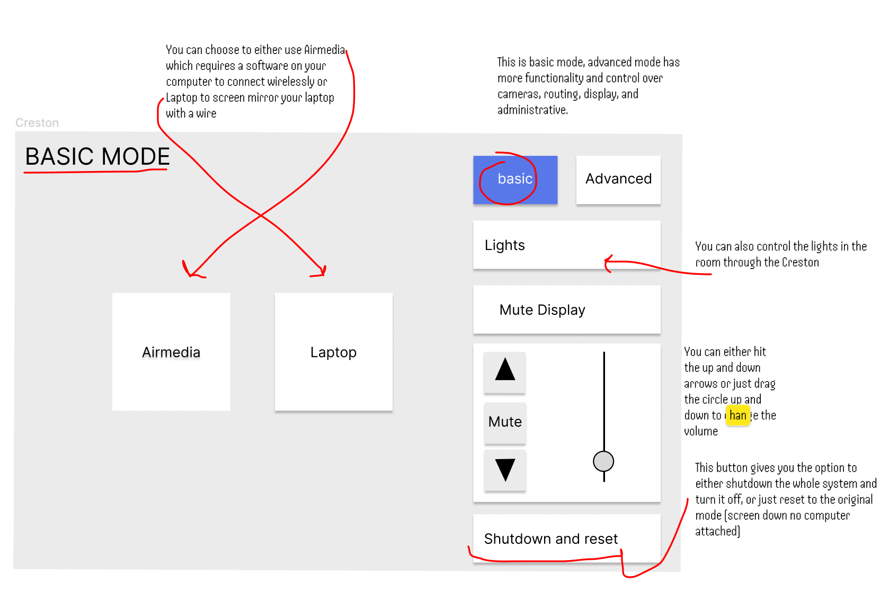

Stage 1: Preperation and Observations
For this project I decided to look at how users interact with the Creston airplay interface, an integrated audiovisual equipment that exists in most classrooms at Brown.
The Creston is fully public, anyone who walks into the classroom can see the interface and what anyone who is using the interface is doing.

Purpose: The Creston interface is a touch screen device that allows users to interact with the creston audio and projector which are both already integrated into the room. The purpose of the interface is to make it easy for teachers and students to connect their personal devices (normally laptops) to the rest of the Creston audiovisual devices in one centralized interface. It's key componets are the airplay and laptop buttons which allow you to select how you want to display your screen. The audio and shutdown buttons are also used often. You can control the room's lights by using either the Creston or the light switch on the side of the room.
I observed 3 different users interact with this interface. Two were students and one was a professor.
Questions for the observed users:
- How did the way you used the Creston interface compare to your expectations?
- What can you do with Creston?
- When do you usually interact with Creston?
- What part about using the Creston took you the most time?
- Why did you decide to use the Creston?
Summary of user responses and observations:
- Two of the users did not find the interface intuitive, it took a few tries to find the right button to do what they expected it to do.
- All users were using the Creston as a way to share content with a wider audience than just themselves (group zoom, music for everyone, video for everyone)
- The user who uses Creston multiple times a week for multiple years found it very easy to navigate, almost like “muscle memory”
- Users used the Creston because it is integrated into the room, two users because the only way to connect to audio and video at once, one because it is a convenient way to use the sound system.
- Shutting down the Creston at the end of the activity is very simple. Users just unplug their laptop and click the power button, no complaints here.